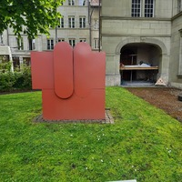
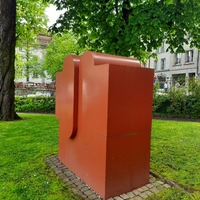
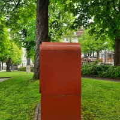
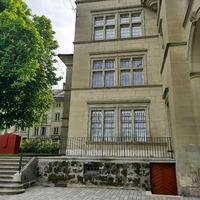
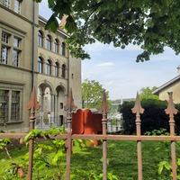

Emile Angeloz, Elément en 3 pièces (1978)
Contenu
Titre
Emile Angeloz, Elément en 3 pièces (1978)
Description
Im Park des Kunsthistorischen Museums Freiburg, hinter einem recht hohen Zaun, steht es. Das Werk aus drei Teilen, Stahl und geometrischen Formen. Es ist nicht frei erreichbar, sondern nur zu den Öffnungszeiten des Museums, also von 11.00 Uhr bis 18.00 Uhr. Im Gesamtkonzept des Geländes sind insbesondere Rot, Grau und Grün prominente Farben. Ebenso wie das Gelände scheint die Skulptur vorsichtig zusammengepuzzelt, aus Teilen, die nicht genau zusammenpassen, dabei jedoch den Eindruck von Zusammengehörigkeit erwecken.
Wäre mir nicht bewusst, dass die 1978 fertiggestellte Skulptur von Emile Angéloz mehr mit den anderen Skulpturen in dessen Reichweite teilt als bloß dessen metallische Materialität, hätte ich es wohl kaum bemerkt. Abgegrenzt mithilfe eines Baums, den Wegen und der deutlicheren Nähe zum Museumsgebäude, fällt es aus dem Kontext des Ensembles, das 1980 an der Schweizerischen Plastikausstellung gezeigt worden war.
Emile Angéloz ist im Januar des Jahres 2022 gestorben. Seine Arbeiten zieren weiterhin die Straßen Fribourgs. Die Stahlformen sollen weiterhin Freude in Form von menschlicher Expression im Raum festhalten.
Die Stahlplastik besteht aus drei Teilen. Eine rechteckige Form wird zentral durch Ellipsen verlebendigt. Eine dezente, bedachte Asymmetrie ziert die Teilkomposition. Es entsteht eine Wirkung von fast erreichter Vollständigkeit, als wäre die Skulptur kurz davor, zu einem vollständig gelösten Puzzle zusammenzufallen. Die 1978 ausgestellte Skulptur teilt sich den Raum, trotz Isolation durch Weg und Baum, mit weiteren Metallkonstrukten, wobei sich das „Element en trois pièces“ jedoch am nächsten zum Museum und den anliegenden Toren und Turm und Säulenbögen befindet. Die Form scheint, sollte man die Skulptur kontextfrei betrachten, herausragend simpel und unkompliziert. Bemerkt man jedoch die Tore, die in den Museumgarten und weiterführend in die Klostergärten des anliegenden Franziskanerklosters führen, sowie die roten Türen, welche in das Museumsgebäude aus Zeiten der Renaissance führen, so wird eine abstrakte Konzentration des allgemeinen Umfeldes in der Stahlkonstruktion deutlich.
Kleine Lebewesen beleben den plötzlich nicht mehr derartig kahl erscheinenden, stählernen Raum. Eine Schnecke hat sich zentral an dem kleineren Rechteck der Skulpturseiten positioniert. Langsam beschreitet sie den Weg hinauf. Was erwartet sie oben? Wer freut sich, sie morgen zu erwischen?
Hiermit möchte ich Ihnen, geehrte Leserin oder geehrter Leser, herzlichst empfehlen nach Fribourg zu reisen, das Element in drei Teilen zu betrachten und bei einem Spaziergang durch die Stadt darauf zu achten, wo Sie es wiederfinden. Je mehr Sie sehen, desto erkennbarer wird die Inspiration hinter der Skulptur.
Wäre mir nicht bewusst, dass die 1978 fertiggestellte Skulptur von Emile Angéloz mehr mit den anderen Skulpturen in dessen Reichweite teilt als bloß dessen metallische Materialität, hätte ich es wohl kaum bemerkt. Abgegrenzt mithilfe eines Baums, den Wegen und der deutlicheren Nähe zum Museumsgebäude, fällt es aus dem Kontext des Ensembles, das 1980 an der Schweizerischen Plastikausstellung gezeigt worden war.
Emile Angéloz ist im Januar des Jahres 2022 gestorben. Seine Arbeiten zieren weiterhin die Straßen Fribourgs. Die Stahlformen sollen weiterhin Freude in Form von menschlicher Expression im Raum festhalten.
Die Stahlplastik besteht aus drei Teilen. Eine rechteckige Form wird zentral durch Ellipsen verlebendigt. Eine dezente, bedachte Asymmetrie ziert die Teilkomposition. Es entsteht eine Wirkung von fast erreichter Vollständigkeit, als wäre die Skulptur kurz davor, zu einem vollständig gelösten Puzzle zusammenzufallen. Die 1978 ausgestellte Skulptur teilt sich den Raum, trotz Isolation durch Weg und Baum, mit weiteren Metallkonstrukten, wobei sich das „Element en trois pièces“ jedoch am nächsten zum Museum und den anliegenden Toren und Turm und Säulenbögen befindet. Die Form scheint, sollte man die Skulptur kontextfrei betrachten, herausragend simpel und unkompliziert. Bemerkt man jedoch die Tore, die in den Museumgarten und weiterführend in die Klostergärten des anliegenden Franziskanerklosters führen, sowie die roten Türen, welche in das Museumsgebäude aus Zeiten der Renaissance führen, so wird eine abstrakte Konzentration des allgemeinen Umfeldes in der Stahlkonstruktion deutlich.
Kleine Lebewesen beleben den plötzlich nicht mehr derartig kahl erscheinenden, stählernen Raum. Eine Schnecke hat sich zentral an dem kleineren Rechteck der Skulpturseiten positioniert. Langsam beschreitet sie den Weg hinauf. Was erwartet sie oben? Wer freut sich, sie morgen zu erwischen?
Hiermit möchte ich Ihnen, geehrte Leserin oder geehrter Leser, herzlichst empfehlen nach Fribourg zu reisen, das Element in drei Teilen zu betrachten und bei einem Spaziergang durch die Stadt darauf zu achten, wo Sie es wiederfinden. Je mehr Sie sehen, desto erkennbarer wird die Inspiration hinter der Skulptur.
liste des auteurs
Veronika Malaschonok
Créateur
Emile Angéloz
with Role
Fotograf:in
Format
Kunstwerk
Couverture temporelle
1980 7. ESS-SPA
Sujet
Skulptur

FrontETP.jpg
SemiprofileETP.jpg
SideviewETP.jpg
viewfromthegardensETP.jpg
FirstglaceETP.jpg SnailofETP.mp4
SnailofETP.mp4  ElementindreiTeilenEmile Angeloz.VeronikaMalaschonok.pdf
ElementindreiTeilenEmile Angeloz.VeronikaMalaschonok.pdf Ce contenu a été déposé le May 11, 2023 par Institut für Kunstgeschichte der Universität Bern en utilisant le formulaire "Beitrag hochladen" sur le site "Öffentlichkeiten der Kunst": https://www.publics-arts.ch/s/oedk
Cliquer ici pour voir les données collectées.